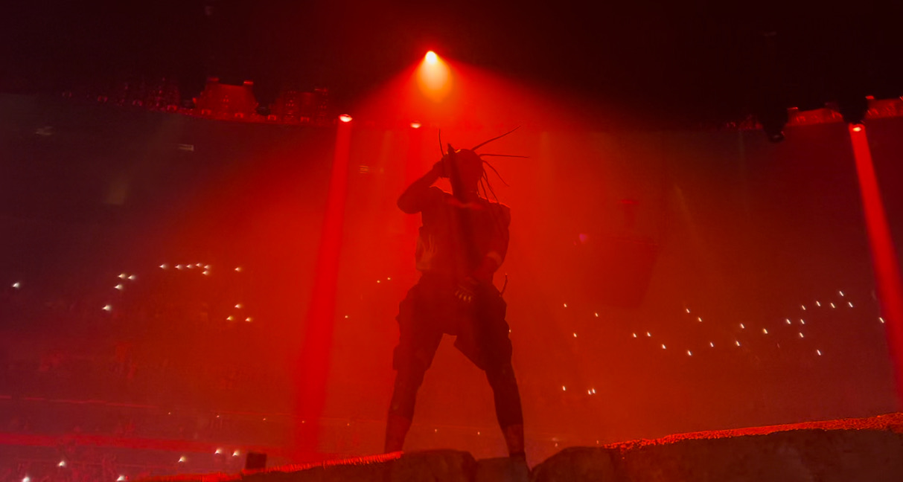

The state of rap in 2024
Published on 10/10/24 by Camden McClelland
When talking about current-day rap everyone seems to have an opinion. There are some very crazy stances on both ends. You have the side of the people that absolutely despise it and consider all current-day rap to be "mumble rap" which if you listen to a lot of artists you can find many that aren't. Then you have the side of people who absolutely love todays rap and refuse to listen to older rap. Both sides are super extreme and I personally believe if you find that perfect balance in the middle you are a true music enjoyer. If you really appreciate the work of art that is music you can find highlights even in those moments where people might start to hate. A lot of songs that people don't like they will listen to once just to find something to hate on, but if you listen past that outside noise you can find glimmers of high moments in every song. I learned to do that pretty recently, albums that I didn't like after first listen or saw people hating on I'd have myself listen to them actively over a couple days or a week and found myself liking a lot of projects that people despise. At the end of the day it is music and everyone is entitled to their own opinion but I think people need to be more open to finding their own opinion before falling into a herd mindset. If everyone would take more time to find something they like about a project instead of something they hate, it would prove how good of an era we are in musically and overall make people less hateful. We as humans need to be less critical over peoples opinions that don't even pertain to us.

Why I decided to choose MSU
Published on 10/9/24 by Camden McClelland
I am from Pittsburgh so, believe it or not, MSU was never my vision of a destination in the past as a kid. I come from a very big Penn State family so when I told some of them I was going to MSU they were pretty shocked to say the least. But, there was a really good reason that once i explained to them everything. Basically, my freshman year I signed up for a game design class and my teacher Mr. Lucas told us about a very big opportunity. A local community college had partnered with our High School and you could go into a pathway to graduate with an associates degree or a certificate in Game and Web Design. Which was absolutely great but, I didn't understand how good of an opportunity it was as a little freshman. Luckily, Mr. Lucas pushed heavily for us to do it and I am forever grateful for him. So, fast forward to junior year when its the height of finding a college. Well, I was all-in on Penn State that had been my dream for years. We go to downtown Pittsburgh for a college fair and theres a giant Penn State table of course and no one there could answer any of my questions about transferring credits and a degree there. So, my friend told me MSU had a really good game design program so we visited the table and they had a person there specifically to answer game design questions. So it was perfect. That day basically sold me on MSU. As senior year comes, I apply to both and email Penn State and they said they wouldn't take my credits so I get accepted into Michigan State and they were super helpful with the whole transition. I am now a senior in college, but have only been here for a year and some months. I am graduating in the spring which is crazy to say. I can't believe I'm here but I am forever grateful to the teachers that helped me get here and how helpful MSU was with transitioning over credits.